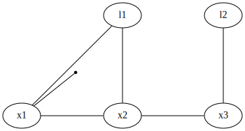

filename = 'test/PC_315967795019746000.ply'
data = read_ply(filename)
points = data['points'] # a dataframe
test_eq(isinstance(points, pd.DataFrame), True)
test_eq(len(points), 86651)
test_eq(list(points.keys()), ['x', 'y', 'z', 'intensity', 'laser_number'])driving
Support Code for the Autonomous Driving Chapter
Reading LIDAR scan from ply file
read_ply
read_ply (filename:str)
*Read a binary_little_endian .ply file and return data as a dict. Note: Adapted from pyntcloud under MIT license
Parameters: filename: of ply file
Returns: A dictionary with points, mesh, and/or comments keys.*
The points and mesh (if available) are stores as Pandas data frames:
points| x | y | z | intensity | laser_number | |
|---|---|---|---|---|---|
| 0 | 0.840252 | -4.179139 | -0.372995 | 7 | 31 |
| 1 | 0.841528 | -19.292950 | 1.258417 | 3 | 14 |
| 2 | -0.977540 | -18.640507 | 1.048261 | 10 | 16 |
| 3 | 0.850112 | -6.747608 | -0.302564 | 11 | 30 |
| 4 | 0.220231 | -9.098052 | -0.241492 | 7 | 29 |
| ... | ... | ... | ... | ... | ... |
| 86646 | -2.113191 | 11.552426 | -0.088612 | 6 | 2 |
| 86647 | -2.798015 | 11.700585 | 0.378175 | 3 | 3 |
| 86648 | -3.513429 | 11.829712 | 1.842977 | 1 | 17 |
| 86649 | -1.930610 | 9.389456 | -0.412726 | 13 | 1 |
| 86650 | -2.121817 | 11.598898 | 1.680530 | 1 | 15 |
86651 rows × 5 columns
If you just want the points from a LIDAR scan, we extract them like so:
read_lidar_points
read_lidar_points (filename:str)
*Read 3D points in LIDAR scan stored as a binary_little_endian .ply file.
Parameters: filename: of ply file
Returns: A tuple (3,N) numpy array.*
scan = read_lidar_points(filename)
test_eq(scan.shape, (3, 86651))Visualizing Point Clouds
Based on code by 3630 TA Binit Shah in Spring 2021.
cloud_layout
cloud_layout (show_grid_lines:bool)
*Create layout for showing clouds. Adapted from code by 3630 TAs Binit Shah and Jerred Chen
Parameters: show_grid_lines (bool): plots gridlines*
cloud_data
cloud_data (cloud:numpy.ndarray, fraction=None)
*Return dictionary with x, y, z components. Adapted from code by 3630 TAs Binit Shah and Jerred Chen
Args: cloud (np.ndarray): point cloud, a (3, num_points) numpy array fraction (double): take only a fraction of the points*
visualize_cloud
visualize_cloud (cloud:numpy.ndarray, show_grid_lines:bool=False, color:str='#90FF90', marker_size:int=1, fraction=None)
*Visualizes point cloud in 3D scatter plot. Adapted from code by 3630 TAs Binit Shah and Jerred Chen
Args: cloud (np.ndarray): point cloud, a (3, num_points) numpy array show_grid_lines (bool): plots gridlines color (str): color for markers marker_size (int): size of each marker fraction (double): take only a fraction of the points*
visualize_cloud(scan, color='#F0E68C', fraction=0.2, show_grid_lines=True)Unable to display output for mime type(s): application/vnd.plotly.v1+jsonvisualize_clouds
visualize_clouds (clouds:list, show_grid_lines:bool=False, cloud_colors=None, marker_size:int=1, do_subsampling:bool=True)
*Visualizes cloud(s) in a iterative 3D plot. Adapted from code by 3630 TAs Binit Shah and Jerred Chen
Due to browser limitations, rendering above 5 frames requires subsampling of the point clouds, which is done automatically.
Example input of arg: clouds = [clouda, cloudb, cloudc] where each cloud is a numpy array of shape (3, num_points). cloud[0] are the x coordinates, cloud[1] is y, and cloud[2] is z.
Args: clouds (list): ordered series of point clouds show_grid_lines (bool): plots gridlines cloud_colors (list): colors for each cloud in the visualization marker_size (int): size of each marker do_subsampling (bool): whether or not subsampling occurs*
scan2 = np.copy(scan)
scan2[0] += 30
visualize_clouds([scan,scan2], show_grid_lines=True, do_subsampling=True)Unable to display output for mime type(s): application/vnd.plotly.v1+jsonanimation_layout
animation_layout (clouds_labels:list, speed)
Setup layout for animation. Adapted from code by 3630 TAs Binit Shah and Jerred Chen
visualize_clouds_animation
visualize_clouds_animation (clouds_series:list, clouds_labels=None, show_grid_lines:bool=False, speed=100, cloud_colors=None, marker_size:int=1, do_subsampling:bool=True)
*Visualizes a cloud(s) series using a slider & play/pause. Adapted from code by 3630 TAs Binit Shah and Jerred Chen
Due to browser limitations, rendering above 5 frames requires subsampling of the point clouds, which is done automatically.
Example input of arg: clouds_series = [[clouda, cloudb], [clouda, cloudb]] clouds_labels = [“iteration1”, “iteration2”]
Args: clouds_series (list): ordered series of point clouds clouds_labels (list): ordered labels for clouds show_grid_lines (bool): plots gridlines speed (int): speed at which the frames are played through cloud_colors (list): colors for each cloud in the visualization marker_size (int): size of each marker do_subsampling (bool): whether or not subsampling occurs*
visualize_clouds_animation([[scan], [scan2], [scan], [scan2]], show_grid_lines=True)Unable to display output for mime type(s): application/vnd.plotly.v1+jsonA very nonlinear planar SLAM example
Mostly for the GTSAM Examples book, although might also make it in driving chapter.
planar_example
planar_example ()
Create a small but quite nonlinear planar SLAM example
graph, truth, keys = planar_example()
show(graph, truth, binary_edges=True)
marginals_figure
marginals_figure (truth:gtsam.gtsam.Values, marginals:gtsam.gtsam.Marginals, keys:list)
Create a figure with the marginals for the planar example.
marginals = gtsam.Marginals(graph, truth)
# This does not seem to work with all versions of matplotlib
# marginals_figure(truth, marginals, keys)